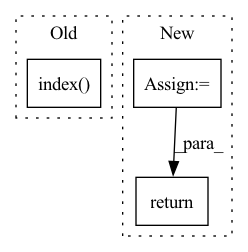

Pattern ID :8380
Before Change
a = nn.Softmax()(outs)
for ii in range(len(outs)):
total += 1
if outs[ii].tolist().index( max(outs[ii])) == y_batch[ii]:
correct += 1
pts.append([a[ii][1], y_batch[ii]])
print((float(correct)/total))After Change
pred.append(torch.sigmoid(outs).round())
true.append(j[-1])
if pred:
pred = torch.cat(pred, 0).cpu().numpy()
true = torch.cat(true, 0).cpu().numpy()
if auprc:
print(AUPRC(pts))
if task == "classification":
print("acc: "+str(accuracy_score(true, pred)))
return accuracy_score(true, pred)
elif task == "multilabel":
print(" f1_micro: "+str(f1_score(true, pred, average="micro"))+\
" f1_macro: "+str(f1_score(true, pred, average="macro")))
return f1_score(true, pred, average="micro"), f1_score(true, pred, average="macro")
In pattern: SUPERPATTERN
Frequency: 4
Non-data size: 3
Instances Fragment ID: 29273198
Project Name: pliang279/multibench
Commit Name: e8df377596458671f3a074b2f5d41a118b3fe6ae
Time: 2021-06-06
Author: ztwu_nil@zju.edu.cn
File Name: training_structures/MFM.py
M Class Name: AnonimousClass
N Class Name: AnonimousClass
M Method Name: test_MFM(4)
N Method Name: test_MFM(3)
M Parent Class:
N Parent Class:
M File Name: training_structures/MFM.py
N File Name: training_structures/MFM.py
M Start Line: 85
M End Line: 103
N Start Line: 115
N End Line: 144
Before Change
weight (torch.tensor): Weight corresponding to the given regressor
reg_index = self.regressor_names.index( name)
weight = self.regressor_params[reg_index]
return weight
def _piecewise_linear_trend(self, t):After Change
regressor_dims = self.regressors_dims[name]
mode = regressor_dims["mode"]
index = regressor_dims["regressor_index"]
if mode == "additive":
regressor_params = self.regressor_params["additive"]
if mode == "multiplicative":
regressor_params = self.regressor_params["multiplicative"]
return regressor_params[index].weight
def _piecewise_linear_trend(self, t):
Piecewise linear trend, computed segmentwise or with deltas. Fragment ID: 29273199
Project Name: ourownstory/neural_prophet
Commit Name: 71ff07c9baa8002f2611b7f6d3f8f94825e59b1b
Time: 2020-09-14
Author: hansika.hewamalage@monash.edu
File Name: neuralprophet/time_net.py
M Class Name: TimeNet
N Class Name: TimeNet
M Method Name: get_reg_weights(2)
N Method Name: get_reg_weights(2)
M Parent Class: nn.Module
N Parent Class: nn.Module
M File Name: neuralprophet/time_net.py
N File Name: neuralprophet/time_net.py
M Start Line: 237
M End Line: 239
N Start Line: 246
N End Line: 255
Before Change
a = nn.Softmax()(outs)
for ii in range(len(outs)):
total += 1
if outs[ii].tolist().index( max(outs[ii])) == y_batch[ii]:
correct += 1
pts.append([a[ii][1], y_batch[ii]])
print((float(correct)/total))After Change
true.append(j[-1])
if pred:
pred = torch.cat(pred, 0).cpu().numpy()
true = torch.cat(true, 0).cpu().numpy()
if auprc:
print(AUPRC(pts))
if task == "classification":
print("acc: "+str(accuracy_score(true, pred)))
return accuracy_score(true, pred)
elif task == "multilabel":
print(" f1_micro: "+str(f1_score(true, pred, average="micro"))+\
" f1_macro: "+str(f1_score(true, pred, average="macro")))
return f1_score(true, pred, average="micro"), f1_score(true, pred, average="macro")
Fragment ID: 29273194
Project Name: pliang279/multibench
Commit Name: 08e57215227c5575c74f7942e287340eb5e50eb7
Time: 2021-06-06
Author: ztwu_nil@zju.edu.cn
File Name: training_structures/MFM.py
M Class Name: AnonimousClass
N Class Name: AnonimousClass
M Method Name: test_MFM(4)
N Method Name: test_MFM(3)
M Parent Class:
N Parent Class:
M File Name: training_structures/MFM.py
N File Name: training_structures/MFM.py
M Start Line: 85
M End Line: 103
N Start Line: 115
N End Line: 144
Before Change
arguments = defaultdict(list)
if tokenizer.eos_token in output:
end_idx = output.index( tokenizer.eos_token)
else:
print("Warning! No eos token in", output)
end_idx = None
output = output[:end_idx]After Change
if value.strip() != "":
arguments[role].append(value.strip())
for key in arguments:
arguments[key] = list(set(arguments[key]))
return dict(arguments)
def get_final_preds_labels(preds, labels): Fragment ID: 29273191
Project Name: thu-keg/omnievent
Commit Name: c1feff5620101803917abf082308243655afc744
Time: 2022-07-06
Author: penghao20170136@163.com
File Name: src/OpenEE/input_engineering/seq2seq_utils.py
M Class Name: AnonimousClass
N Class Name: AnonimousClass
M Method Name: decode_arguments(3)
N Method Name: decode_arguments(3)
M Parent Class:
N Parent Class:
M File Name: src/OpenEE/input_engineering/seq2seq_utils.py
N File Name: src/OpenEE/input_engineering/seq2seq_utils.py
M Start Line: 46
M End Line: 66
N Start Line: 47
N End Line: 64